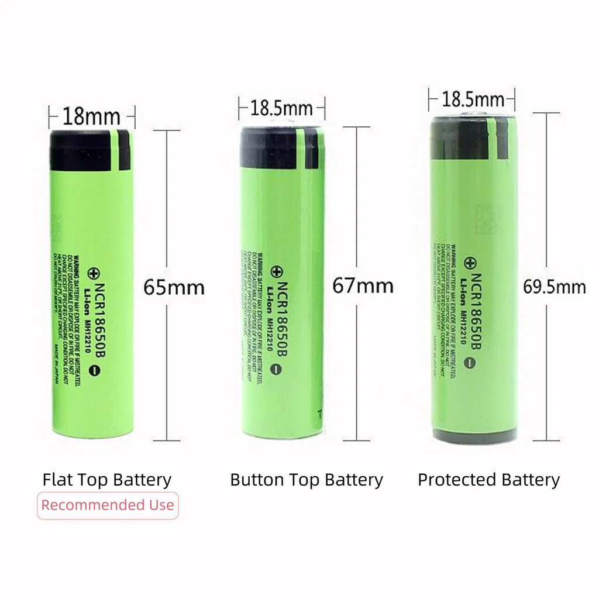

Hardware options¶
This page documents a certain number of LoRa and Meshtastic hardware devices we have tested or somehow evaluated. It is of course not exhaustive, and it is opinionated in the sense that it tries to guide you towards specific purchases to simplify your life.
Let us know if you want to buy a lot so we can organize.
Recommended hardware¶
This is a no-brainer, "just tell me what to buy" guide. There are more options below, but we only recommend devices that we have tested ourselves.
-
Cheapest: HELTEC v4

The V4 does not come with a case, which needs to be 3d-printed, or get the v3. Make sure to pick 902-928MHz.
You need to provide power over USB, any USB-C charger will do, needs a separate app, for example on your phone
-
Low power: WisBlock RAK4631

Longer battery life than HELTEC.
Also needs a phone.
25$USD, 90$ with a case and battery.
-
Standalone: T-Deck plus

Has keyboard and screen (yes, like a BlackBerry), useful if you don't want to use your phone.
70$USD, 77$USD with Meshtastic pre-installed.
Challenger: Heltec v4 prebuilt kit, 50-60USD.
-
Solar relay: WisMesh Solar Repeater Mini

For window, rooftop or in a tree installations.
100$USD.
Challenger: SenseCAP Solar Node P1, 70$USD.
How we classify devices¶
We have those categories:
Success
Those devices were successfully tested and used on a daily basis. Those devices typically end up on the main guide.
In testing
We have our hands on those devices and are testing them. So far, they work, but need more testing before they can be promoted to a full "success".
Untested
Those devices are interesting, but we haven't lay our hands on them yet.
Warning
We tested those devices, and there are serious caveats against using them. Do not order one unless you know what you read an understand the note on the device.
Not working
We tested those devices, and we recommend against using them entirely.
Pocket-sized¶
Those are day-to-day use device, can you can easily carry in a pocket or a pouch. Those generally have a battery.
Success
- Heltec v4 prebuilt kit, 50-60USD, see also this Aliexpress Heltec v4 kit, 43CAD
- WisMesh Pocket V2: GNSS, 1.3" OLED, acceleration sensor, power button, 3200mAh battery, USB-C powered, 100$
- Lilygo T-Deck Plus (80$): blackberry-like, standalone device with battery, keyboard, trackball, LCD display, 2000mAh battery, BLE, WiFi, GPS, MicroSD card reader, microphone/speaker
In testing
- XIAO ESP32S3 & Wio-SX1262 Kit: tiny, cheap, - 40℃ ~ 100℃, WiFi 2.4GHz, BLE 5.0 / Mesh, reset/boot button, 22x23x57mm, 37g, exposed GPIO ports, no battery, 20$. Good candidate for the cheapest kit.
- T-Echo: 200x200 e-ink display, NRF52840, GPS, BT 5.0, no wifi, only two buttons, NFC, 850mAh battery, temperature/pressure sensor, 55$
- Seeedstudio XIAO ESP32S3 & Wio-SX1262 Kit: tiny, - 40℃ ~ 100℃, WiFi 2.4GHz, BLE 5.0 / Mesh, reset/boot button, 22x23x57mm, 37g, exposed GPIO ports, cheap (20$), does not ship with Meshtastic firmware, needs full erase before reflash or gets into a boot loop
Warning
- SenseCAP Card Tracker T1000-E (40$USD) anarcat managed to brick this one, be careful when experimenting with it, it can be hard to recover, see this note.
Untested
- T-Deck Pro: 3.1" e-ink touch screen, 4G module, WiFi 2.4GHz, BLE 5, GPS, TF Card, mic, speaker, keypad, see also the T5 e-paper s3 pro
- Muzi has builds on top of the Heltec, e.g. this H2T (137CAD) made with a Heltec T114, this R1 Neo (123CAD) is similar to the WisMesh Pocket, but smaller, better sealed, but more expensive
Base stations and solar¶
Those are bulkier devices that are mounted on a mast or are used as a back-haul, possibly with a special antenna. The devices may or many not have batteries.
Success
- WisMesh Solar Repeater Mini: solar, battery, mast-mountable, cheaper than the full repeater below, 100$
In testing
- SenseCAP Solar Node P1: 70$USD, outdoors solar-powered relay
with 4x18650 batteries, nRF4840, BT 5.0, 3 power buttons, 5
LEDs, USB-C for debug, recommended by
nyme.sh. Note that the base kit doesn't ship with the actual batteries, or the GNSS device, for that you need the Pro kit which is 20$ more. Needs to be tested through night and winter. Also sold at RobotShop for 100CAD. - WisMesh Solar Repeater: solar, battery, mast-mountable, unclear if it can be setup without solar and if it supports MQTT/ethernet, 300$, SenseCAP Solar Node P1 might be sturdier and cheaper. Works through the night in summer time, needs testing through winter.
Untested
- WisMesh Ethernet Gateway: no battery, no solar (might be convertible, but ethernet and PoE, note that HTTP-based management not possible, so configuration still has to go through Bluetooth, but monitoring is possible over MQTT, and of course the gateway receives and relays messages over LoRa/Meshtastic!
Mounts¶
Base stations will typically be mounted on rooftops or poles.
The Ottawa Mesh docs have great documentation and examples for this.
Development boards¶
Those are bare-bones circuit boards that work standalone but cannot really be used in production as they lack a proper case.
The devices here generally do not have a battery.
Success
- HELTEC v4 (v3) is the cheapest option, 20$ with the case (but no battery, and battery doesn't fit in the case), they also have an eink dev board. one advantage Heltec has over the below RAK kits is that you can connect to them over wifi, the downside is they use more power because they are ESP32 based instead of NRF5280
- the RAK19003 base kit (28$) is more expensive, but less power-hungry than the Heltec
In testing
- XIAO nRF52840 & Wio-SX1262 Kit: even tinier, nRF52840, Semtech SX1262, NFC, BT, -40°C ~ 65°C, 22 x 21 x 17.8mm. Probably the smallest kit you can get. Reset button hard to reach.
Untested
- T-Beam Supreme: 1.3" OLED display, 18650 battery socket, magnetometer, 2.4GHz WiFi, BLE 5, GNSS, no case, ESP32, 52$, the T-Beam SoftRF is similar but without a display and cheaper, 30$USD
Cases¶
If you use a development board, you might want a case around it: most of them (except the Heltec v3) come without a case.
The Ottawa folks recommend the AlleyCat models, although the license on the page is a bit unclear, as it claims CC BY-SA but then follows that with a paragraph limiting commercial use.
DIY build on top of the RAK kit¶
The RAK19003 base kit comes without a case, but one can be printed. It's tricky because there are many (83!) design files in there.
On top of 3D-printing the case, you need to also buy:
- 4 × M3x20mm socket head cap screws (this kit covers this and the nuts)
- 4 × M3 nuts
- 2 × M2.5 screws (not part of the above kit, length unclear, here are M2.5x6mm or this kit)
- 1 × battery (Amazon, possibly the same as Abra, optional?)
- there's also an optional battery cutoff switch, couldn't find an equivalent on Abra
Power¶
Moved to its own page, see Power.
Batteries¶
Battery setups depends on the particular device.
Contrary to popular belief, it seems like lithium-ion batteries work fine below freezing although we still need to confirm the results from the folks in Calgary ourselves. The Calgary folks are using plain unprotected batteries below freezing without issues.
For really remote relays that are difficult to service, they started using LTO batteries which are better suited to handle deep freeze -- we're talking -40℃ on mountaintop -- conditions.
Battery cells need to be handled with care, see this discussion about those batteries, for example. So far it seems most folks use normal "unprotected" cells in various devices, without any problems. As long as you handle the batteries with care, you should be fine.
18650¶
The Heltec v4 prebuilt kit, like many other devices, uses 18650 battery cells.
You can buy those batteries in "vape shops" and various electronics shops also hold stock:
- Addison: has 5-10$CAD unprotected batteries near the LEDs desk at the St-Michel store, not on the website
- Abra: Samsung 25R 18650 2500mAh 20A for 10$CAD
- Mastervox: 3.7V 3000mAh for 10$CAD, maybe protected?
- Veshra: EVE 35V INR18650 3500mAh 10.2A for 6$CAD
- AliExpress: Kuugro ku-3500 18650 Battery 3500mAh 3.7V 12A for 2$CAD, 90$CAD for 20
Tip on protected battery sizes
Note that "protected" batteries often are larger (by 0.5mm) and longer (by as much as 4.5mm because of the "button" and protection circuit) which makes them harder to fit in some casings:

Note that 18650 batteries are named after their size: 18mm wide, and 65mm high. Wikipedia claims the 0 is the digit after 65mm ("65.0mm").
Flat cells¶
Those cell packs are more used in DIY kits or lab setups:
Charger¶
You might also want to have a charger if you deal with a lot of 18650 batteries.
Warning
Do not try to charge 18650 batteries in a normal "AA" battery charger! They won't fit and it won't work.
You don't need a charger for a single device: devices normally come with their own charge controller and can charge over whatever power source they normally use (USB-C, Solar, etc).
It is just nice to slot them in a device already charged, and they are not necessarily sold charged.
- Abra: 4-battery charger, 15$: works well, LEDs turn green when full, needs a 5V 1-2A USB-A power supply (not included), 1A output
- Addison: "universal" 4-battery charger, 60$: untested, seems overpriced, includes cigarette lighter adapter and AC power plug, 1A output
Antennas¶
Tip
For a more in-depth discussion about antenna testing, theory and practice, see the Antennas section.
We have experience with this:
-
SYMITANT58(25$CAD Amazon) -
a similar (and currently cheaper) model is this RF Explorer (10$USD from from Seeed Studio)
Warning
The antenna reports project warns against using a Seeed Studio antenna, particularly for non-US frequencies. It's unclear if it is the same antenna as the above RF Explorer, further testing necessary.
Note that, to connect those to (say) a Heltec, you will need adapters:
N (Antenna) --(cable)--> RP-SMA --(adaptor)--> SMA --(pigtail)--> IPEX U.FL (Heltec v4)
See also this connector guide for recognizing those N, RP-SMA, SMA and IPEX connectors. And yes, in the above setup, we essentially touch on all the connectors from the guide.
Other lists include:
- Official Meshtastic guide1, which also refers to a series of antenna reports
nyme.shrecommendations- Ottawa Mesh recommendations
Resellers¶
The above lists generally link to the upstream supplier or official resellers.
There are, however, other resellers that might be more interesting to you for various reasons:
- Veshra: more expensive, but local, possibly south shore (to be confirmed); stocks antennas, batteries, Heltec, currently no Seeed Studio, RAK, or ESP32 devices
- Space Hedgehog: also more expensive; stocks Antenna, Heltec, based in Ottawa, related to the Ottawa mesh
- Motion Power & Witt Supply Co. has EVE 35V 18650 3500mAh 6 for 36$, based in Ottawa
Hacks¶
Other documentation¶
- Connector types overview
- Another connector guide
- Haruki's Meshtastic experiments - excellent hardware review: compares battery runtimes, power usage, antenna tests, comparison tables
-
Note that the "Alfa AOA-915-5ACM" recommended for "Base station / repeater" in that guide falls short of the advertised +5dBi gain in this technical review. ↩